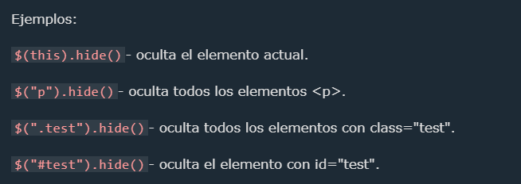
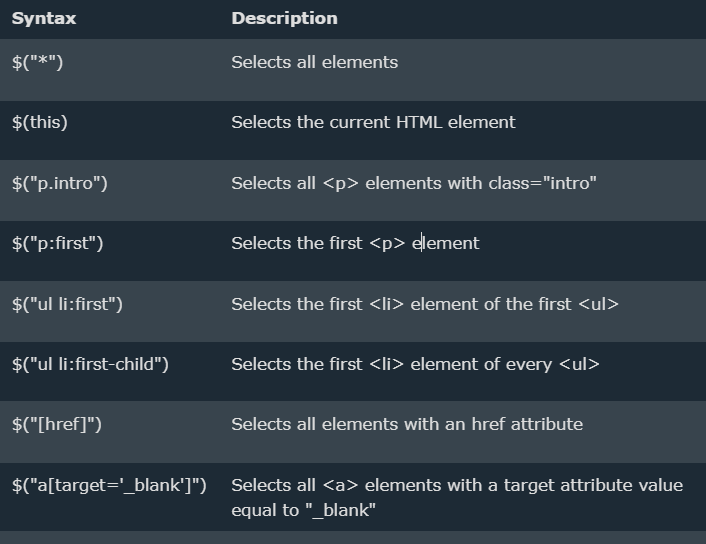
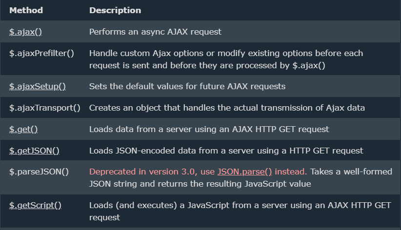
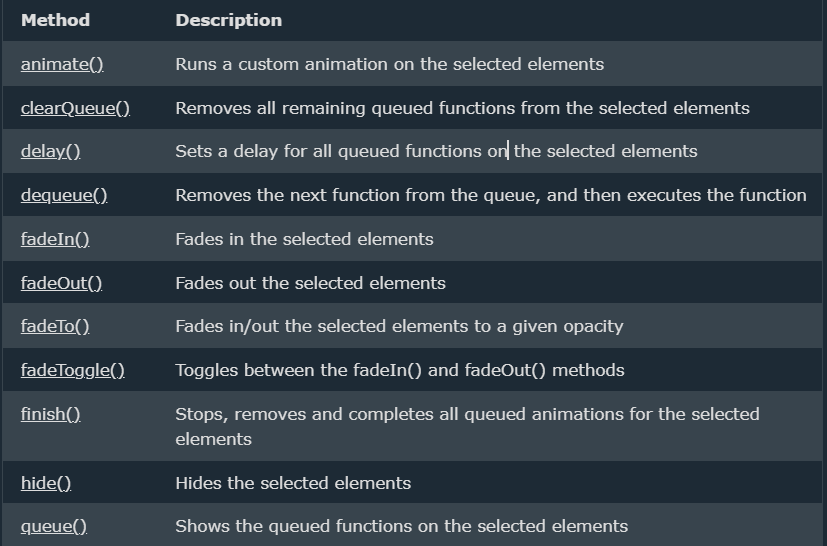
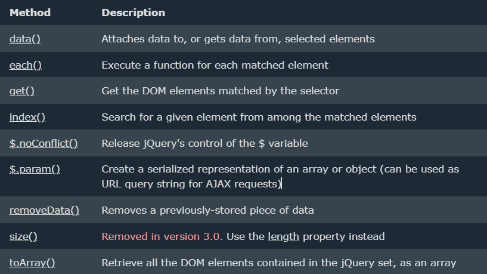

jQuery es una biblioteca de JavaScript.
jQuery simplifica enormemente la programación de JavaScript.
jQuery es fácil de aprender.
$(document).ready(function(){
$("p").click(function(){
$(this).hide();
});
});
El propósito de jQuery es hacer mucho más fácil el uso de JavaScript en su sitio web.
La biblioteca jQuery contiene las siguientes características:
Existen muchas otras bibliotecas de JavaScript, pero jQuery es probablemente la más popular y también la más ampliable.
Muchas de las empresas más importantes de la Web utilizan jQuery, como por ejemplo:
Hay varias formas de empezar a utilizar jQuery en su sitio web. Puede:
Hay dos versiones de jQuery disponibles para descargar:
Si no desea descargar y alojar jQuery usted mismo, puede incluirlo desde una CDN (Content Delivery Network).
Google es un ejemplo de alguien que aloja jQuery:
https://ajax.googleapis.com/ajax/libs/jquery/3.7.1/jquery.min.js
La sintaxis de jQuery está hecha a medida para seleccionar elementos HTML y realizar alguna acción sobre los elementos.
La sintaxis básica es: $( selector ). acción ()

Los selectores de jQuery son una de las partes más importantes de la biblioteca jQuery.
Los selectores jQuery le permiten seleccionar y manipular elementos HTML.
Los selectores de jQuery se utilizan para "buscar" (o seleccionar) elementos HTML en función de su nombre, identificación, clases, tipos, atributos, valores de atributos y mucho más. Se basa en los selectores CSS existentes y, además, tiene algunos selectores personalizados propios. Todos los selectores en jQuery comienzan con el signo de dólar y paréntesis: $().
Todos los selectores en jQuery comienzan con el signo de dólar y paréntesis: $().
El selector de elementos jQuery selecciona elementos según el nombre del elemento. Puede seleccionar todos
los elementos en una página como esta:
$("p")
Ejemplo Cuando un usuario hace clic en un botón, todos
los elementos quedarán ocultos:
$(document).ready(function(){
$("button").click(function(){
$("p").hide();
});
});
El selector jQuery utiliza el atributo id de una etiqueta HTML para encontrar el elemento específico.#id Una identificación debe ser única dentro de una página, por lo que debes usar el selector #id cuando quieras encontrar un elemento único y único. Para encontrar un elemento con una identificación específica, escriba un carácter almohadilla, seguido de la identificación del elemento HTML:
$("#test")
Cuando un usuario hace clic en un botón, el elemento con id="test" se ocultará:
$(document).ready(function(){
$("button").click(function(){
$("#test").hide();
});
});
El .classselector jQuery encuentra elementos con una clase específica. Para buscar elementos con una clase específica, escriba un punto, seguido del nombre de la clase:
$(".test")
Cuando un usuario hace clic en un botón, los elementos con class="test" se ocultarán:
$(document).ready(function(){
$("button").click(function(){
$(".test").hide();
});
});

AJAX es el arte de intercambiar datos con un servidor y actualizar partes de una página web, sin recargar toda la página. La siguiente tabla enumera todos los métodos de jQuery AJAX:

La siguiente tabla enumera todos los métodos de jQuery para crear efectos de animación.


jQuery tiene varios métodos para la manipulación de CSS. Veremos los siguientes métodos:
addClass()- Agrega una o más clases a los elementos seleccionados.
removeClass()- Elimina una o más clases de los elementos seleccionados.
toggleClass()- Alterna entre agregar/eliminar clases de los elementos seleccionados
css()- Establece o devuelve el atributo de estilo.
El siguiente ejemplo mostrará cómo utilizar el toggleClass()método jQuery. Este método alterna entre agregar/eliminar clases de los elementos seleccionados:
$("button").click(function(){
$("h1, h2, p").toggleClass("blue");
});
Johansitoweb